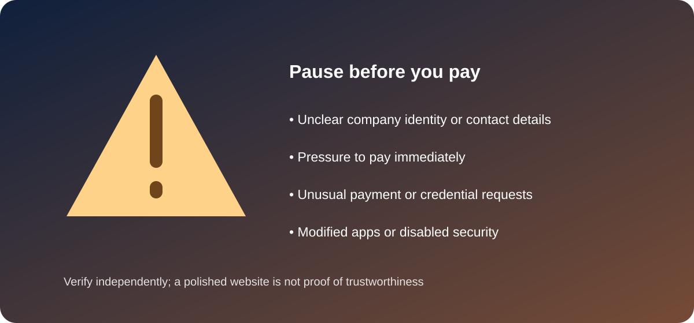

IPTV Subscription Scams: Warning Signs Before You Pay
Author: IPTV Guide UK · Last updated: 2026-11-19
Not every unfamiliar IPTV offer is a scam, but unclear business details, pressure tactics and requests for sensitive information should prompt extra checks. Use this guide to assess risk before sharing payment or account details.

Common warning signs
- Unrealistic promises: Huge premium channel or sports catalogues for unusually low prices, without clear rights information.
- No accountable business: Missing company identity, contact details, terms or privacy policy.
- Urgent payment pressure: Countdown offers, threats that access will disappear or pressure to pay immediately.
- Unusual payment requests: Requests for gift cards, cryptocurrency or transfers to unrelated personal accounts, especially without a proper receipt or refund terms.
- Unsafe software: Modified apps, unknown APK files, suspicious browser extensions or instructions to turn off security settings.
- Credential harvesting: Requests for email passwords, one-time codes, banking login details or remote access to your device.
For transparency, this guide also contains a promotional link to the Kemo TV website Sponsored. Its inclusion does not mean the provider has been independently vetted or that its service is endorsed; apply the same business, payment, security and content-rights checks to it as to any other provider.
Reduce the risk before you pay
Do not let urgency or a limited-time offer rush your decision. Verify the operator using contact details found independently, avoid payment routes that leave you with no clear record or recourse, and keep receipts and written terms. Use a unique password and enable multi-factor authentication where offered.
For a full pre-purchase review of content rights, total price, renewals, cancellation, refunds and device support, use our IPTV subscription checklist. This page focuses on scam signals and protecting yourself if something goes wrong.
If you think you have been scammed
Contact your bank or payment provider promptly using its official contact channel. Change reused passwords, secure your email account, remove suspicious apps and preserve receipts, messages and transaction references. In the UK, consider reporting fraud through the current official Action Fraud service or the relevant police route; check current reporting arrangements.
Frequently asked questions
Does a cheap subscription always mean a scam?
No, price alone does not prove fraud or legality. Treat unusually broad promises and missing business or rights information as reasons to investigate further.
Should I share an activation code with support?
Only use the provider's verified official support channel and share the minimum information required. Never share one-time banking or email security codes.
Can a legitimate-looking website still be risky?
Yes. Design and testimonials can be copied or fabricated. Verify the operator, terms, payment route and content rights independently.
Explore more: IPTV Guide UK · UK IPTV guide · Device guide · App guide